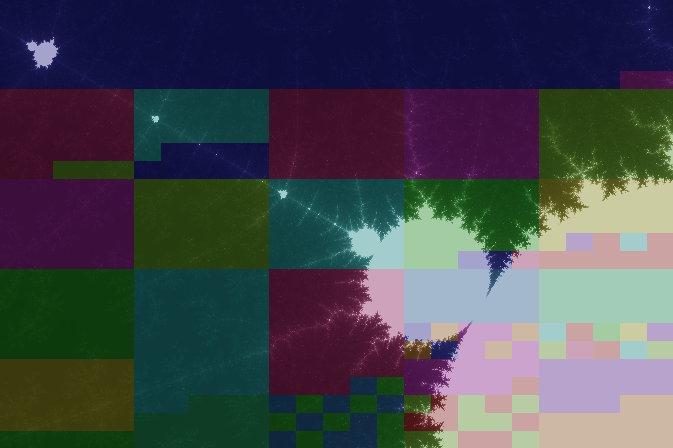

Work Stealing #
In the previous section we have discussed an implementation of a renderer that was reusing threads in a pool to render parts of an image. However, when different tasks consist of different amounts of work then that work might still not be distributed evenly among available threads in the pool.
The ForkJoinPool class provides a mechanism where tasks can be split recursively into sub-tasks. Every thread has its own task queue and sub-tasks created by a thread are scheduled to run on its own queue. However, if threads run out of tasks they can steal tasks from the queues of other threads in a dynamic attempt to distribute work more evenly.
Before using this mechanism to implement a renderer, we look at the API for using it.
Testing the API #
The following test creates a recursive task for computing a fibonacci number.
void testRecursiveTasks() {
final ForkJoinPool pool = ForkJoinPool.commonPool();
final Future<Integer> fib10 = pool.submit(new Fib(10));
try {
assertEquals(fib10.get(), 55);
} catch (InterruptedException | ExecutionException e) {}
}
We use ForkJoinPool.commonPool again to access
an ExecutorService that is actually an instance
of the ForkJoinPool class.
As argument to submit,
ForkJoinPool instances allow
ForkJoinTasks
which are usually created by subclassing one of two
provided classes.
Here is our definition of the Fib class
as a subclass of
RecursiveTask.
class Fib extends RecursiveTask<Integer> {
final int n;
Fib(final int n) {
this.n = n;
}
@Override
protected Integer compute() {
if (n <= 1) {
return n;
} else {
final Fib fib1 = new Fib(n - 1);
final Fib fib2 = new Fib(n - 2);
fib1.fork();
return fib2.compute() + fib1.join();
}
}
}
The compute method creates two recursive sub-tasks,
schedules the first using the fork method,
executes the second directly,
and then combines the results,
possibly waiting for the result of the first tasks
using the join method.
The join method is like get
(ForkJoinTasks are actually futures)
but behaves differently regarding exceptions.
Also, join does not throw an InterruptedException
when the calling thread is interrupted.
In practical applications of ForkJoinTasks
the base case should not be as simple as in this example.
The documentation mentions that, as a rule of thumb,
the base case should execute between 100 and 10000
basic computation steps.
ForkJoinTasks behave differently compared to normal futures
when cancelled.
An argument signifying that executing threads should be interrupted
is ignored by ForkJoinTasks as the following test demonstrates.
void testCancellingARecursiveAction() {
final ForkJoinPool pool = new ForkJoinPool();
final List<?> interruptions = new ArrayList<>();
final Future<?> future = pool.submit(new RecursiveAction() {
@Override
protected void compute() {
while (!Thread.interrupted()) {
try {
TimeUnit.SECONDS.sleep(1);
} catch (InterruptedException e) {
interruptions.add(null);
return;
}
}
interruptions.add(null);
}
});
try {
TimeUnit.MILLISECONDS.sleep(100);
} catch (InterruptedException e) {}
future.cancel(true);
assertTrue(future.isCancelled());
pool.shutdown();
try {
assertFalse(pool.awaitTermination(1, TimeUnit.SECONDS));
} catch (InterruptedException e) {}
pool.shutdownNow();
assertTrue(interruptions.isEmpty());
}
Unlike the presious test,
this one does not use ForkJoinPool.commonPool
for a reason discussed below.
This time, we submit a
RecursiveAction
which differs from a RecursiveTask
by the result type void of the compute method.
After giving the pool some time to start executing the task
we cancel it, passing true to cancel in an attempt
to interrupt the executing thread.
However, our call to awaitTermination
with a (rather long) timeout of one second
shows that the task is not interrupted.
If it was, awaitTermination would quite likely have returned true
sooner than within one second.
Finally, we force an immediate shutdown using shutdownNow
and assert that indeed there have been no interruptions.
Our use of shutdown and shutdownNow is the reason
why we did not use ForkJoinPool.commonPool.
The common pool is shutdown only when exiting the program,
so our tested task would run until then.
A work-stealing renderer #
We are now ready to implement a ForkJoinRenderer using ForkJoinTasks.
Its render method creates a ForkJoinPool
just like our last test instead of using the common pool
in order to be able to shut it down.
public boolean render(final Box pixels) {
final ForkJoinPool pool = new ForkJoinPool();
fork(pool, pixels);
return join(pool);
}
The fork method creates a recursive action
and executes it using the pool.
private void fork(final ForkJoinPool pool, final Box pixels) {
pool.execute(new Action(pixels));
}
We use execute instead of submit
which does not return a future.
The join method shuts down the pool
and waits until rendering is completed
or the calling thread is interrupted.
private boolean join(final ExecutorService pool) {
pool.shutdown();
try {
return pool.awaitTermination(1, TimeUnit.HOURS);
} catch (InterruptedException e) {
pool.shutdownNow();
return false;
}
}
The timeout of one hour will rarely be reached in practice. We expect normal termination or interruption to occur sooner. When the calling thread is interrupted the rendering tasks are terminated by shutting down the pool immediately.
The class for recursive rendering actions is defined as follows.
private class Action extends RecursiveAction {
private final Box pixels;
Action(final Box pixels) {
this.pixels = pixels;
}
@Override
protected void compute() {
if (pixels.size.x * pixels.size.y < THRESHOLD) {
renderer.render(pixels);
} else {
final List<Action> actions = pixels.split() //
.map(Action::new) //
.collect(Collectors.toList());
if (actions.size() > 1) {
invokeAll(actions);
} else {
renderer.render(pixels);
}
}
}
}
It uses an appropriate threshold
to decide whether to split a task further
and uses an underlying StreamRenderer
to render pixels in the base case.
The method invokeAll forks all given tasks
and waits for them to complete.
The following picture shows the same part
of the Mandelbrot fractal that was rendered
in the previous section
but was rendered with the ForkJoinRenderer instead.

The colors show the effect of work stealing which allows to distribute the work in the bottom right corner more evenly among available processors.
Task: Using the common pool #
Change the implementation of the ForkJoinRenderer
to use ForkJoinPool.commonPool instead of a custom pool.
Modify the definition of fork
to return a future representing the submitted action.
Modify the definition of join to accept this future
as argument instead of the pool.
Modify the definition of recursive rendering actions
to use the version of the render method of the
underlying StreamRenderer
that allows to check a custom thread for interruptions.
Pass the calling thread when constructing the actions,
so it can be passed to calls to render in the base case.
Can the rendering process still be aborted successfully
after your changes?